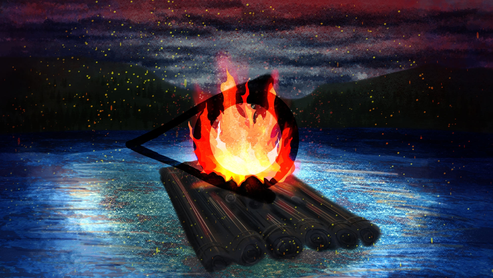

Religion

Main gods
Ezion, Queen and mother of the Gods, and Goddess of water
The first being, she was there in the beginning, when there was nothing, not darkness, nothing. She grew bored of the nothing and formed from the waters of Snowden Lake. She is also responsible for the almost genocide of the human race when she engulfed all land mass under the waters of Sworden Lake.
Vitros, Goddess of Darkness, night and the afterlife
She isn't bad, more seen as an inevitable force, something to be worshiped and never forgotten.
Elon, Goddess of snakes, fertility and Life.
She is the kindest and most forgiving god. She created all beings from the mud of Sworden lake, and is responsible for the harvest with her Husband, Howar.
Howar, God of good weather
He is a shifting, ever moving being described as being made of smoke and clouds twisted into human form. He is unyielding, erratic and husband of Elon as they work together to grow plants and people worship both to ensure a good harvest. He has to go to Ezion and ask for rain.
Side gods
Enrew, God of War, Destruction and Disease
Enrew came from seemingly nowhere, appearing when the first weapon was made. Not many of the other gods like him, but they still see him as necessary to keep things in check.
Alth, Deity of Fire
Formed when Howar and Ezion had a thunderous dispute, Alth was formed of lightning striking Elon. This makes it difficult to track their lineage. They created Vitri when they grew tired of lighting the entire world.
Vitri, God of the sun, healing and medicine
After his creation, Vitri has run non stop. He gets very few breaks, only when the moon covers him can he stop running across the sky, as he sits on the moon to rest.
Altae, Goddess of Strategy
Altae appeared when the first blow was struck in battle. She and Enrew are thought to be twins, but no one is ever sure. If another deity wants a war, they come to Altae. Nobody wants to deal with Enrew.
The religion
This is Bee's religion unique to her country but is almost entirely wiped out by the invasion and removal of history from her culture and country. Her religion and culture was matriarchal and women held more power over men, unfortunately the government system everywhere else is a patriarchal society.
Rituals
Twice a day, before bed and when you wake up you must pour some water into a sacred cup, set it in the shade and pray to Ezion and Vitros. There is also traditional dancing and singing done at huge ceremonies once a month. These ceremonies are called water wheel festivals and involve large cups of water and small harvest and animal sacrifices to the gods. The people only rarely have alcohol and are very light weight, they prefer natural water because of their goddess of water.
The benenging
In the beginning there was nothing, not darkness, not light, nothing. She grew bored of the nothing and formed from the waters of Snowden Lake.From the depth of the lake she created Vitros who then created a massive eel called Alabaster to lurk the depths. But the eel grew so hungry it tried to escape, Ezion was angry of his defiance and ripped out its guts and turned its skin into land. From the eyes of the eel she made Elon and Howar who went on to create Alth, the goddess of fire. Elon then used the mud surrounding the lake to create the first humans and Alth gave them fire.
The almost end
The humans fought, all day and night and the extreme bloodshed washed into the lake. Ezion was angry, angry that the humans were wasting their gift of life and defiling the gods, so she made the water become a wall of destruction that destroyed all villages and Vitros covered the sky in darkness so no light could shine. But Elon, who had previously gone down and walked among the mortals as a large cat had seen their kindness, picked up two humans who she knew were trustworthy and saved them. From them came the rest of humanity.